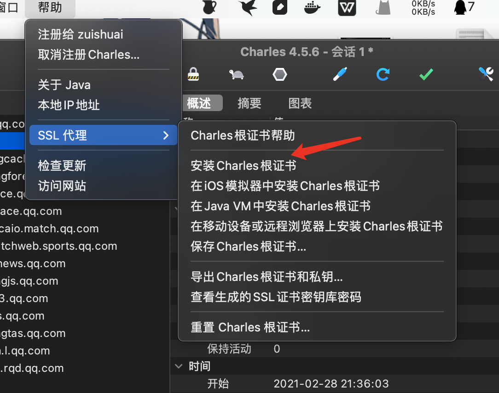
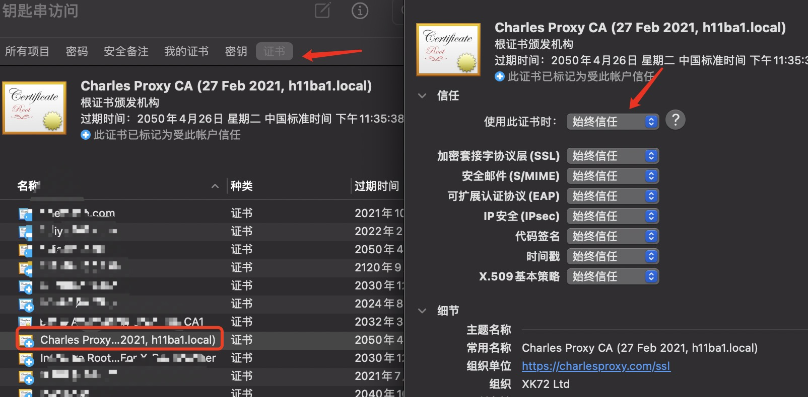
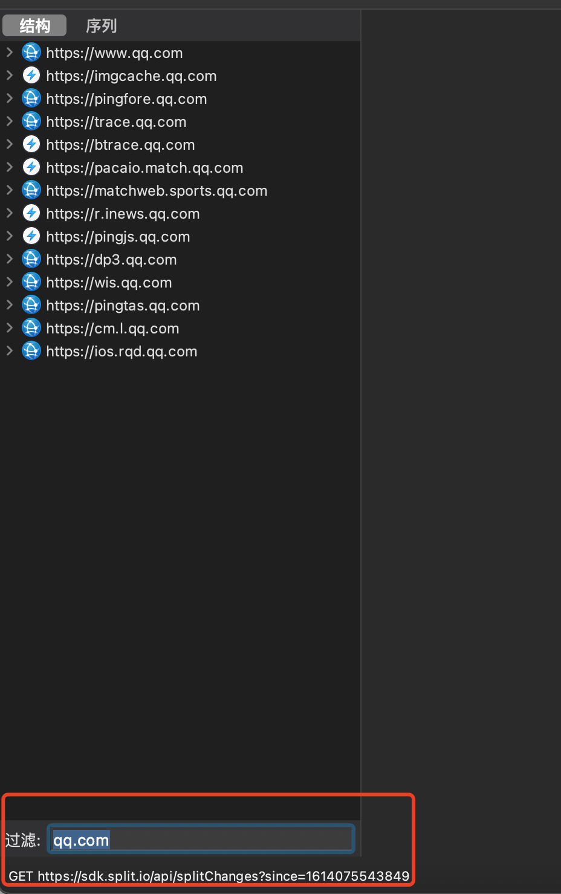
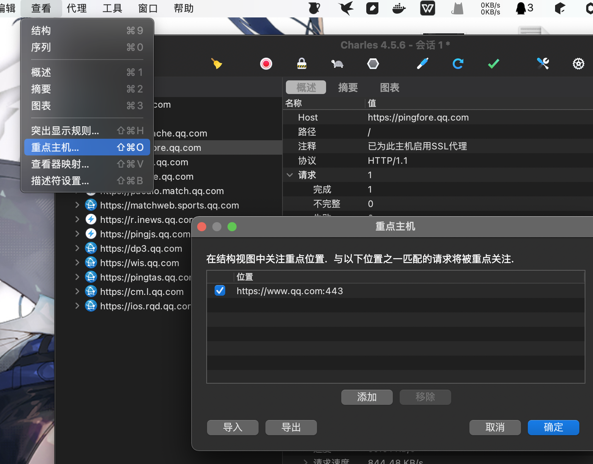
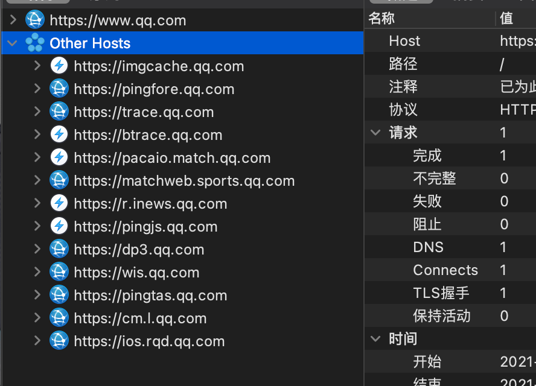
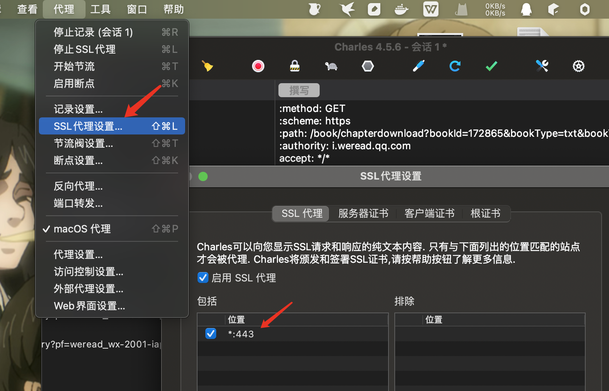
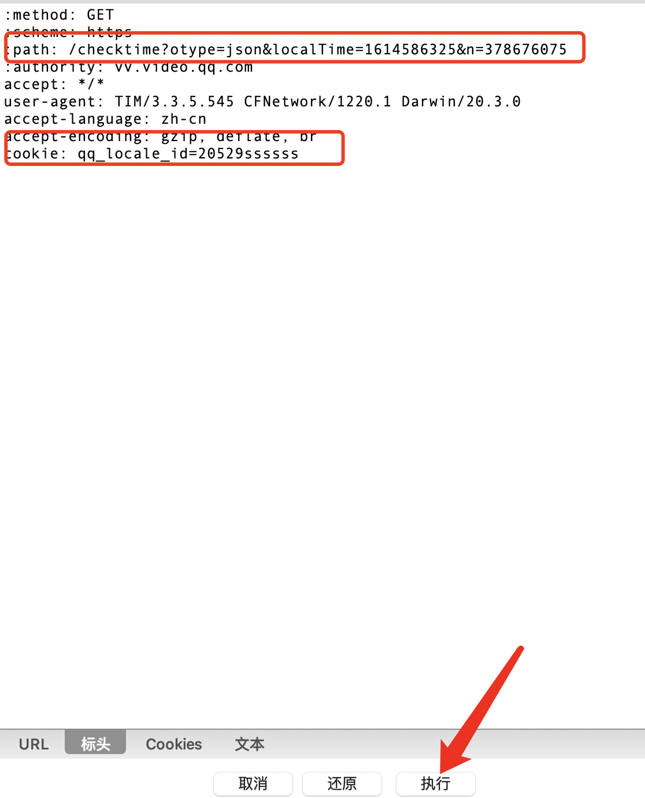
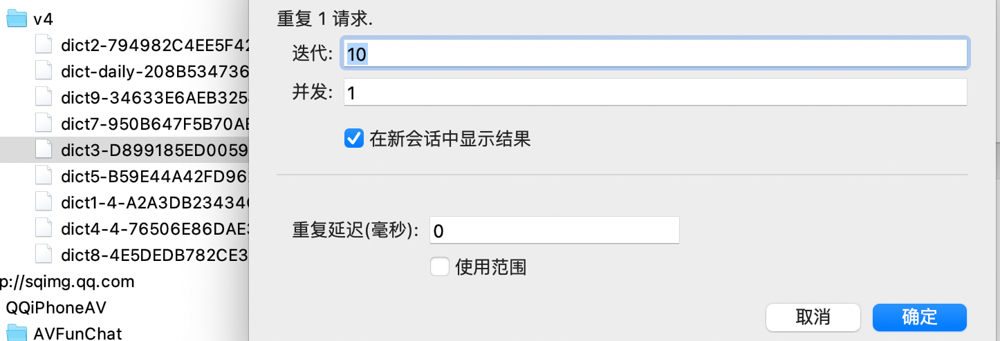

clarles使用教程
1.安装ssl证书
帮助–> ssl 代理 –>安装cha rles根证书

选择安装之后，还需要在mac钥匙串里找到证书将证书设置为始终信任

2.过滤特定域名
方法1:filter过滤

方法二：设置重点关注域名
选择需要重点关注的域名，鼠标右键选择重点（focused）
选中的域名就在查看（view)–>重点主机（focused Hosts）中。

选择重点之后,选择的域名就会出现在最上面，其他域名会折叠在other hosts里，方便查看。

3.乱码解决
一开始抓包可能会乱码，需要在代理中设置：ssl代理设置为*：443允许抓取ssl数据包。

4.数据包更改
选中需要更改的数据包，右键撰写，即可对数据包进行编辑，并且进行请求

5.数据包并发重放
数据包并发请求在挖掘逻辑漏洞时有奇效。
鼠标右键选中需要重放的数据包，选择高级重复。

本博客所有文章除特别声明外，均采用 CC BY-NC-SA 4.0 许可协议。转载请注明来自 h11ba1's blog！
 alipay
alipay
评论